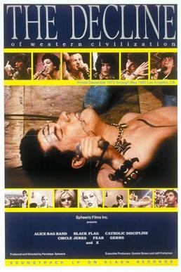

Penelope Spheeris
1981
100 minutes
Like most good punks, you've never seen this all the way through in one setting. This is the movie your friends put on and you watch through Black Flag and The Germs and then your short attention span means you wander away to do something else or get drunk and pass out or whatever. Or you end up waking up after passing out after some well-meaning person popped this in the VCR and you wake up most of the way through it just in time to see Fear sneering at the crowd and belting out a couple of their snotty favorites.
You saw this for the first time early, but you saw Clue first so Lee Ving got to be Mr. Boddy for a few years before he got to be the front man of Fear. So every view of this for you has left you saying, "Hey, that's Mr. Boddy from the Clue movie!" The same goes for Fear's notorious SNL appearance. And every subsequent viewing of Clue has left you saying, "Hey, that's Lee Ving from Fear!" And it's one of those cultural moments of symmetry that has been mutually beneficial for both works in your eyes.
Years later when you did campus radio, a third piece of the equation would drop into place for you. One evening your punk friend from high school would be visiting your show and between songs you would be poring through the stacks of CDs and vinyl, one of the greatest perks for having a show. Your friend would uncover a strange album by James White and the Blacks, featuring a pompadoured man with a saxophone on the cover. You threw it on and it sounded like nothing else you had heard in your life. A little further digging in the stacks led you to a Christmas track by the same band, "Christmas with Satan", which you immediately put on the air, replaying it a few times to and finding yourself a bit in awe.
Some further crate archaeology revealed to you another vinyl by another instantiation of the same band, James Chance and the Contortions. And some additional reading revealed them to be a staple of New York "no-wave" music during the punk era, and you fell in love with their crazy, saxophone heavy tracks. Another doorway had been kicked open for you. And it also made the context for another infamous song click into place. Fear had a song called "New York's Alright If You Like Saxophones", and all of a sudden this made so much more sense to you. Something about punk music makes it possible to have a love/hate relationship with different kinds of punk scenes and love the fact that they "hate" each other so much, especially when they can intelligently and hilariously take the piss out of each other like this.
You were more than happy to ride the fence on all kinds of "rivalries" between punk and the things punk was mocking. You loved Pink Floyd but you were happy to hate it along with Richard Hell. You liked a lot of New Wave music but found it hilarious when The Dicks or the Dead Milkmen would write entire songs about how much they hated the genre. Even disco would leave you shaking your butt while agreeing that it was generally bad dance music for druggies and degenerates. Punk in its early form was reactionary against a lot of music that was actually quite good, so it was worth using early punk opinions as listening suggestions. There's nothing more punk than doing the opposite of what a cultural authority tells you to do, after all.
The one area you could agree on, though, was that Nazi punks could indeed fuck off. No arguing with that one.
Time to choose something different: